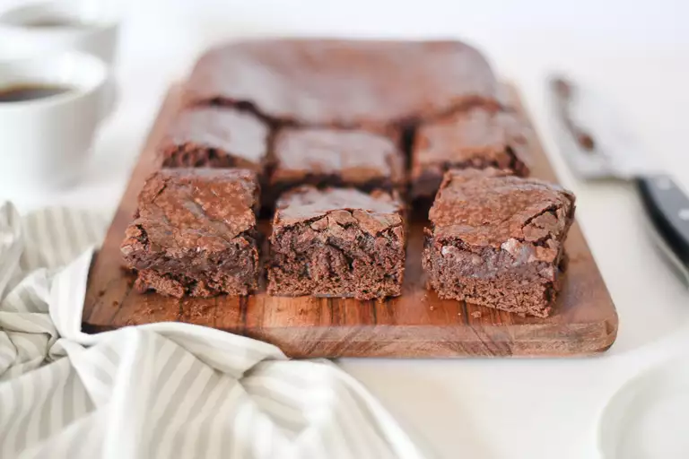

Brownies

These vegan brownies are rich, chewy, and feature a wonderfully crisp crust.
Ingredients
- Flour
- Sugar
- Cocoa Powder
- Baking Powder
- Salt
- Water
- Oil
- Vanilla
Steps
- Whisk the dry ingredients in a large bowl.
- Add the wet ingredients and stir until the batter is blended.
- Pour the batter into a prepared baking dish and spread evenly.
- Bake in the preheated oven until the top is no longer shiny and the center feels just set.
- Let the brownies cool before cutting them into squares.
Back to Home